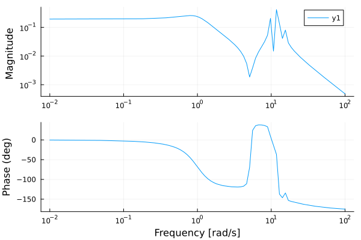

Frequency Response Analysis
Linearization and Bode plots for TDS systems.
Basic Workflow
Frequency response analysis linearizes a TDS problem at its equilibrium:
using Powerful
using PowerfulCases
using ControlSystemsBase
# Step 1: Solve power flow
case = load("ieee14")
sys = SystemModel(parse_network(case.raw))
pf_sol = solve(ACPowerFlowProblem(sys), Newton())
# Step 2: Set up TDS (GENCLS generators, SEXS exciters, TGOV1 governors)
dyr_data = parse_dynamics(case.dyr, sys)
init = setup_tds(pf_sol, dyr_data)
prob = TDSProblem(init; tspan = (0.0, 10.0))
# Step 3: Linearize at the operating point
ss_model = linearize(prob,
[(:TGOV1, :pref0, 1:1)], # Input: power reference of the first governor
[(:GENCLS, :omega, 1:1)] # Output: rotor speed of the first generator
)
# Step 4: Compute the frequency response
frequencies = 10.0 .^ range(-2, 2, length = 100) # rad/s
mag, phase, w = bode(ss_model, frequencies)
size(mag)(1, 1, 100)Understanding Linearization
From Nonlinear DAE to Linear State-Space
The TDS system is a differential-algebraic equation (DAE):
M·ẋ = f(x, y, u) # Differential equations
0 = g(x, y, u) # Algebraic constraintsLinearization at the steady state gives a state-space model:
ẋ = A·x + B·u
z = C·x + D·uMatrix definitions:
A = M⁻¹(f_x - f_y·g_y⁻¹·g_x): State matrix (determines stability)B = M⁻¹(f_u - f_y·g_y⁻¹·g_u): Input matrix (how inputs affect the states)C,D: Output matrices
The algebraic variables y are eliminated through the constraint g(x, y, u) = 0, which leaves a model in the differential states only. A is the same state matrix that eigenvalue analysis uses. States with a zero mass coefficient are eliminated with y.
An eliminated quantity w (an algebraic variable, or a state with zero mass) follows from the states and inputs as w = -g_y⁻¹·g_x·x - g_y⁻¹·g_u·u, which gives its output rows C = -g_y⁻¹·g_x and D = -g_y⁻¹·g_u; a state output has D = 0.
What Can Be Inputs and Outputs?
| Type | As Input | As Output |
|---|---|---|
| Setpoint parameter | Supported | Not supported |
| Differential state | Not supported | Supported |
| Algebraic variable | Not supported | Supported |
Inputs are setpoint parameters, the initial values of the model's reference inputs computed during initialization:
| Model | Setpoints |
|---|---|
| TGOV1 | :pref0 (power reference), :tm0 |
| SEXS | :vref0 (voltage reference), :E_fd0 |
| GENCLS | :P_m0, :E_q0 |
| GENROU | :P_m0, :E_fd0 |
An unknown setpoint raises an error that lists the setpoints of the model.
Outputs are any variables of a model: differential states (e.g. omega, delta) and algebraic variables, including the network variables a model references (e.g. a generator's terminal voltage (:GENCLS, :v, 1:1)) and bus variables ((:Bus, :v, 1:3)). Instances are internal indices of the model.
The linearize Function
Basic Usage
ss_model = linearize(prob, inputs, outputs; verbose = false)Arguments:
prob::TDSProblem: TDS problem at equilibriuminputs: Vector of input specificationsoutputs: Vector of output specificationsverbose: Print progress information
Returns: a StateSpace model from ControlSystemsBase.jl.
Input/Output Specification Format
Inputs and outputs use the same tuple format:
(model_name::Symbol, field_name::Symbol, instances::AbstractVector{Int})instances are positions of the model instances in the TDS system (1 is the first instance), not bus numbers. The instance order is that of prob.sys.models:
prob.sys.models.TGOV1.BUS # bus of TGOV1 instance 1, 2, ...5-element Vector{Int32}:
1
2
3
6
8Input examples:
# Single input: power reference of the first governor
inputs = [(:TGOV1, :pref0, 1:1)]
# Three inputs: the first three governors
inputs = [(:TGOV1, :pref0, 1:3)]
# Specific instances (non-contiguous)
inputs = [(:TGOV1, :pref0, [1, 3, 5])]
# Multiple input types
inputs = [
(:TGOV1, :pref0, 1:2), # Governor power references
(:SEXS, :vref0, 1:2), # Exciter voltage references
]Output examples:
# Single output: rotor speed of the first generator
outputs = [(:GENCLS, :omega, 1:1)]
# Multiple outputs
outputs = [
(:GENCLS, :omega, 1:3), # Rotor speeds
(:GENCLS, :delta, 1:3), # Rotor angles
]Working with ControlSystemsBase.jl
The returned StateSpace model works with the Julia control systems ecosystem.
Bode Plots
# Magnitude and phase at the given frequencies (rad/s)
mag, phase, w = bode(ss_model, frequencies)
# mag[i, j, k]: magnitude for output i, input j, frequency k
# phase[i, j, k]: phase in degreesWith Plots.jl loaded, ControlSystemsBase draws the Bode plot:
using Plots
bodeplot(ss_model, frequencies)
nyquistplot(ss_model) and marginplot(ss_model) work the same way.
Poles and Zeros
p = poles(ss_model) # eigenvalues of A
z = tzeros(ss_model) # transmission zeros
all(real.(p) .< 1e-6) # no poles in the right half-planetrueThe rotor angles are only defined relative to each other, so one pole is at zero.
MIMO Systems
With several inputs or outputs the model is MIMO; indexing selects one channel:
ss_mimo = linearize(prob,
[(:TGOV1, :pref0, 1:2)], # 2 inputs
[(:GENCLS, :omega, 1:2)] # 2 outputs
)
G21 = ss_mimo[2, 1] # input 1 → output 2 (a StateSpace)
size(ss_mimo) # (outputs, inputs)(2, 2)Complete Example
Voltage reference of the first exciter to the rotor speeds of the first two generators:
ss_avr = linearize(prob,
[(:SEXS, :vref0, 1:1)],
[(:GENCLS, :omega, 1:2)]
)
# Poles closest to the imaginary axis
p = poles(ss_avr)
sort(p; by = real)[end-2:end]3-element Vector{ComplexF64}:
-0.09300713112948622 + 11.797383167018376im
-0.09300713112948622 - 11.797383167018376im
7.300874703163996e-14 + 0.0im# Peak gain from the voltage reference to each rotor speed
mag, _, _ = bode(ss_avr, frequencies)
maximum(mag[1, 1, :]), maximum(mag[2, 1, :])(0.42647147169644034, 0.2849444068976488)Common Input/Output Pairs
| Analysis | Input | Output |
|---|---|---|
| Governor response | (:TGOV1, :pref0, ...) | (:GENCLS, :omega, ...) |
| Exciter response | (:SEXS, :vref0, ...) | (:SEXS, :LAW_y, ...) or (:GENROU, :e1q, ...) |
| Electromechanical oscillations | (:TGOV1, :pref0, ...) | (:GENCLS, :delta, ...) |
Limitations
- Inputs must be setpoints: state variables cannot be inputs.
- Equilibrium required: the model is linearized at the initial steady state of the problem, not during a transient.
- Single operating point: the linear model is valid near the operating point only.
Common Issues
Output Not Found
Symptom: Error "Variable 'X' not found for model M. Variables: ...", or an ArgumentError that an instance is out of range.
Cause: The model has no variable of that name, or fewer instances.
Solution: Use a name from the listed variables. The state names have the form {Model}_{state}_{instance}:
compute_eigenvalues(prob).state_names30-element Vector{Symbol}:
:TGOV1_LAG_y_1
:TGOV1_LAG_y_2
:TGOV1_LAG_y_3
:TGOV1_LAG_y_4
:TGOV1_LAG_y_5
:TGOV1_LL_x_1
:TGOV1_LL_x_2
:TGOV1_LL_x_3
:TGOV1_LL_x_4
:TGOV1_LL_x_5
⋮
:SEXS_LL_x_2
:SEXS_LL_x_3
:SEXS_LL_x_4
:SEXS_LL_x_5
:SEXS_LAW_y_1
:SEXS_LAW_y_2
:SEXS_LAW_y_3
:SEXS_LAW_y_4
:SEXS_LAW_y_5Poor Frequency Response
Symptom: Unexpected Bode plot shape or gain.
Cause: The system is not at an equilibrium.
Solution:
- Verify that the power flow converged
- Check the TDS initialization:
result = validate_tds_initialization(prob)
print_validation_report(result)Numerical Issues
Symptom: NaN or Inf in the results.
Cause: Singular or badly conditioned Jacobian.
Solution:
- Check for generators with zero inertia
- Verify the dynamic model parameters
- Try a different operating point
Further Reading
- Time-Domain Simulation: TDS problem setup and solving
- Power Flow Analysis: The steady-state solution
- Eigenvalue Analysis: Modal analysis and participation factors